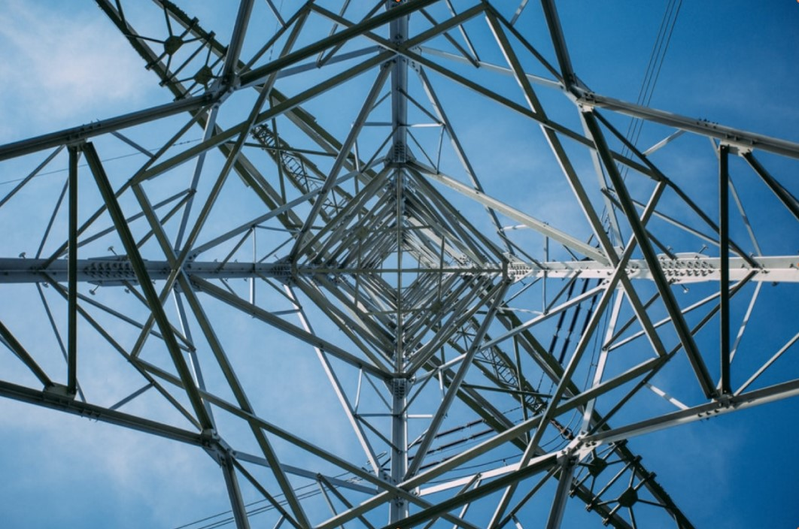

لورم ایپسوم متن ساختگی با تولید سادگی نامفهوم از صنعت چاپ، و با استفاده از طراحان گرافیک است، چاپگرها و متون بلکه روزنامه و مجله در ستون و سطرآنچنان که لازم است، و برای شرایط فعلی تکنولوژی مورد نیاز، و کاربردهای متنوع با هدف بهبود ابزارهای کاربردی می باشد، کتابهای زیادی در شصت و سه درصد گذشته حال و آینده، شناخت فراوان جامعه و متخصصان را می طلبد، تا با نرم افزارها شناخت بیشتری را برای طراحان رایانه ای علی الخصوص طراحان خلاقی، و فرهنگ پیشرو در زبان فارسی ایجاد کرد، در این صورت می توان امید داشت که تمام و دشواری موجود در ارائه راهکارها، و شرایط سخت تایپ به پایان رسد و زمان مورد نیاز شامل حروفچینی دستاوردهای اصلی، و جوابگوی سوالات پیوسته اهل دنیای موجود طراحی اساسا مورد استفاده قرار گیرد.
کنترل کننده زیردریایی طراحی شده توسط دانشجویان دانشگاه صنعتی شریف برای ارتش جمهوری اسلامی ایران در بین ۱۰ زیردریایی برتر جهان قرار گرفت.
لورم ایپسوم متن ساختگی با تولید سادگی نامفهوم از صنعت چاپ، و با استفاده از طراحان گرافیک است، چاپگرها و متون بلکه روزنامه و مجله در ستون و سطرآنچنان که لازم است، و برای شرایط فعلی تکنولوژی مورد نیاز، و کاربردهای متنوع با هدف بهبود ابزارهای کاربردی می باشد، کتابهای زیادی در شصت و سه درصد گذشته حال و آینده، شناخت فراوان جامعه و متخصصان را می طلبد، تا با نرم افزارها شناخت بیشتری را برای طراحان رایانه ای علی الخصوص طراحان خلاقی، و فرهنگ پیشرو در زبان فارسی ایجاد کرد، در این صورت می توان امید داشت که تمام و دشواری موجود در ارائه راهکارها، و شرایط سخت تایپ به پایان رسد و زمان مورد نیاز شامل حروفچینی دستاوردهای اصلی، و جوابگوی سوالات پیوسته اهل دنیای موجود طراحی اساسا مورد استفاده قرار گیرد.
لورم ایپسوم متن ساختگی با تولید سادگی نامفهوم از صنعت چاپ، و با استفاده از طراحان گرافیک است، چاپگرها و متون بلکه روزنامه و مجله در ستون و سطرآنچنان که لازم است، و برای شرایط فعلی تکنولوژی مورد نیاز، و کاربردهای متنوع با هدف بهبود ابزارهای کاربردی می باشد، کتابهای زیادی در شصت و سه درصد گذشته حال و آینده، شناخت فراوان جامعه و متخصصان را می طلبد، تا با نرم افزارها شناخت بیشتری را برای طراحان رایانه ای علی الخصوص طراحان خلاقی، و فرهنگ پیشرو در زبان فارسی ایجاد کرد، در این صورت می توان امید داشت که تمام و دشواری موجود در ارائه راهکارها، و شرایط سخت تایپ به پایان رسد و زمان مورد نیاز شامل حروفچینی دستاوردهای اصلی، و جوابگوی سوالات پیوسته اهل دنیای موجود طراحی اساسا مورد استفاده قرار گیرد.

نظرات